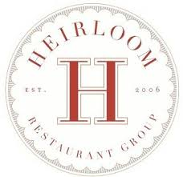
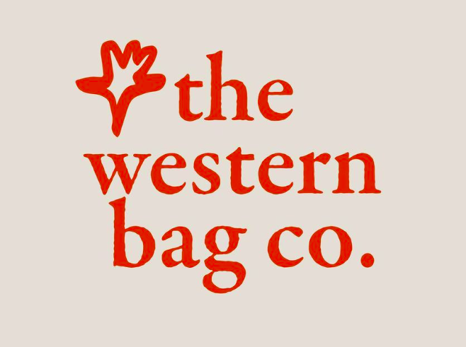
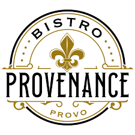

Brigham Young University - Marriott School of Business, Provo, UT
Bachelor of Science (Expected Graduation: April 2026) Pre-Business, Italian Minor | GPA: 3.50 / 4.00 Finance Society Member | Accounting Society Member
Experience

Heirloom Restaurant Group, Provo, UT
Intern; Assistant to CFO (January 2024 - Present)
Forecasted projected profits and losses for nine LLCs under parent company for 12-month period.
Coordinated product delivery to two partner businesses on a weekly basis.
Trained eight restaurant managers on implementation of new payment system and POS.
Station 22, Provo, UT
Head Server (July 2022 - Present)
Led monthly staff trainings on best hospitality practices for increased customer satisfaction.
Oversaw serving staff hours to minimize wage expenses on weekly basis.
Raised restaurant rating by 18% over two years of operation.

Western Bag Co (On Campus Internship), Salt Lake City, UT
Intern; (January 2024 - April 2024)
Spearheaded creation and implementation of brand strategy for an increase of 10k Instagram followers.
Managed over 400 items of inventory and develop sales strategy to maximize profit for busy season.
Fostered relationship with firm representative through bi-weekly reports of team progress.

Bistro Provenance, Provo, UT
Lead Server (Feb 2023 - Aug 2023)
Instructed serving staff under new management during initial six-month opening period.
Demonstrated expertise in fine dining service, including extensive knowledge of wine varietals, regions, and pairings.
Raised restaurant rating by 18% over two years of operation.
Volunteer Service
Missionary Training Center, Provo, UT
Italian Interpreter (August 2022 - June 2023)
Interpreted weekly speeches and meetings real-time into Italian for non-English speakers.
Recorded over 30 sermons into Italian for future reference in database.
The Church of Jesus Christ of Latter-day Saints, Rome, IT
Volunteer Representative (February 2020 - March 2022)
Developed leadership ability in eight-month position of responsibility over peers.
Grew communication and adaptability skills in contacting over 800 new individuals.
Collaborated competently in team environments on a daily basis.
Skills & Interests
Languages
Advanced Mid Italian Speaker
Music
Founder of two garage bands playing various venues in Provo
Technical Skills
Proficient in VBA, SQL, HTML, Microsoft Excel, and Tableau